Estimate a GAM model
We will estimate a GAM model using the mgcv package and the simdat dataset distributed with the itsadug package:
library(marginaleffects)
library(itsadug)
library(mgcv)
simdat$Subject <- as.factor(simdat$Subject)
dim(simdat)
#> [1] 75600 6
head(simdat)
#> Group Time Trial Condition Subject Y
#> 1 Adults 0.00000 -10 -1 a01 0.7554469
#> 2 Adults 20.20202 -10 -1 a01 2.7834759
#> 3 Adults 40.40404 -10 -1 a01 1.9696963
#> 4 Adults 60.60606 -10 -1 a01 0.6814298
#> 5 Adults 80.80808 -10 -1 a01 1.6939195
#> 6 Adults 101.01010 -10 -1 a01 2.3651969Fit a model with a random effect and group-time smooths:
model <- bam(Y ~ Group + s(Time, by = Group) + s(Subject, bs = "re"),
data = simdat)
summary(model)
#>
#> Family: gaussian
#> Link function: identity
#>
#> Formula:
#> Y ~ Group + s(Time, by = Group) + s(Subject, bs = "re")
#>
#> Parametric coefficients:
#> Estimate Std. Error t value Pr(>|t|)
#> (Intercept) 2.0574 0.6903 2.980 0.00288 **
#> GroupAdults 3.1265 0.9763 3.202 0.00136 **
#> ---
#> Signif. codes: 0 '***' 0.001 '**' 0.01 '*' 0.05 '.' 0.1 ' ' 1
#>
#> Approximate significance of smooth terms:
#> edf Ref.df F p-value
#> s(Time):GroupChildren 8.26 8.850 3649 <2e-16 ***
#> s(Time):GroupAdults 8.66 8.966 6730 <2e-16 ***
#> s(Subject) 33.94 34.000 569 <2e-16 ***
#> ---
#> Signif. codes: 0 '***' 0.001 '**' 0.01 '*' 0.05 '.' 0.1 ' ' 1
#>
#> R-sq.(adj) = 0.609 Deviance explained = 61%
#> fREML = 2.3795e+05 Scale est. = 31.601 n = 75600Adjusted Predictions: predictions() and plot_predictions()
Compute adjusted predictions for each observed combination of regressor in the dataset used to fit the model. This gives us a dataset with the same number of rows as the original data, but new columns with predicted values and uncertainty estimates:
pred <- predictions(model)
dim(pred)
#> [1] 75600 14
head(pred)
#>
#> Estimate Std. Error z Pr(>|z|) 2.5 % 97.5 %
#> -1.8739 0.1992 -9.406 < 2.22e-16 -2.26432 -1.48339
#> -1.3463 0.1817 -7.407 1.2879e-13 -1.70252 -0.99006
#> -0.8191 0.1671 -4.901 9.5203e-07 -1.14669 -0.49156
#> -0.2930 0.1561 -1.877 0.060455 -0.59884 0.01288
#> 0.2313 0.1489 1.553 0.120383 -0.06058 0.52316
#> 0.7527 0.1455 5.172 2.3113e-07 0.46745 1.03787
#>
#> Prediction type: response
#> Columns: rowid, type, estimate, std.error, statistic, p.value, conf.low, conf.high, Group, Time, Trial, Condition, Subject, YWe can easily plot adjusted predictions for different values of a regressor using the plot_predictions() function:
plot_predictions(model, condition = "Time")
Marginal Effects: slopes() and plot_slopes()
Marginal effects are slopes of the prediction equation. They are an observation-level quantity. The slopes() function produces a dataset with the same number of rows as the original data, but with new columns for the slop and uncertainty estimates:
mfx <- slopes(model, variables = "Time")
head(mfx)
#>
#> Term Estimate Std. Error z Pr(>|z|) 2.5 % 97.5 %
#> Time 0.02612 0.001367 19.10 < 2.22e-16 0.02344 0.02880
#> Time 0.02611 0.001360 19.19 < 2.22e-16 0.02344 0.02877
#> Time 0.02608 0.001334 19.54 < 2.22e-16 0.02346 0.02869
#> Time 0.02601 0.001282 20.28 < 2.22e-16 0.02349 0.02852
#> Time 0.02589 0.001201 21.55 < 2.22e-16 0.02353 0.02824
#> Time 0.02572 0.001092 23.54 < 2.22e-16 0.02358 0.02786
#>
#> Prediction type: response
#> Columns: rowid, type, term, estimate, std.error, statistic, p.value, conf.low, conf.high, predicted, predicted_hi, predicted_lo, Group, Time, Trial, Condition, Subject, Y, epsWe can plot marginal effects for different values of a regressor using the plot_slopes() function. This next plot shows the slope of the prediction equation, that is, the slope of the previous plot, at every value of the Time variable.
plot_slopes(model, effect = "Time", condition = "Time")
The marginal effects in this plot can be interpreted as measuring the change in Y that is associated with a small increase in Time, for different baseline values of Time.
Excluding terms
The predict() method of the mgcv package allows users to “exclude” some smoothing terms, using the exclude argument. You can pass the same argument to any function in the marginaleffects package:
predictions(model, newdata = "mean", exclude = "s(Subject)")
#>
#> Estimate Std. Error z Pr(>|z|) 2.5 % 97.5 %
#> 11.75 0.6947 16.91 < 2.22e-16 10.39 13.11
#>
#> Prediction type: response
#> Columns: rowid, type, estimate, std.error, statistic, p.value, conf.low, conf.high, Y, Group, Time, SubjectSee the documentation in ?mgcv:::predict.bam for details.